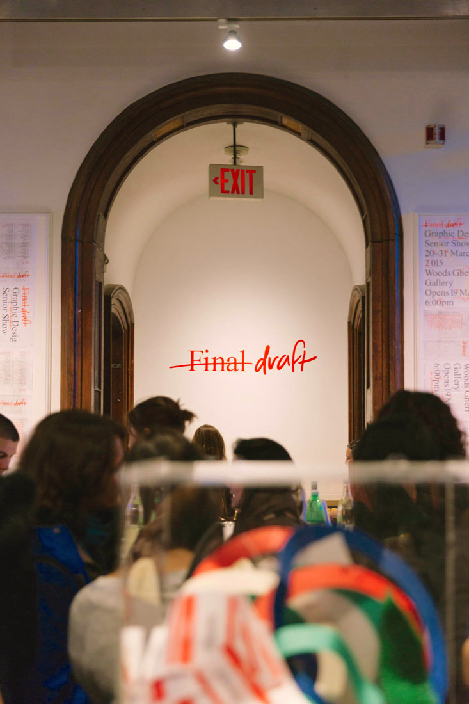

Final draft
Wordmark, catalog (newsprint broadside, saddle-stitched booklet in plastic bag)
8.5 x 11" at largest
2015
Sarcastic stencils to accompany the RISD Graphic Design Senior Show catalog (books, lame, lame-o, lulz, meh, start).
The exhibition was curated and coordinated by Alice Taranto and Michael Ee. The vinyl was prodcued by Jeni Zhen. Photographs of the space and opening night by Patrick Han.

